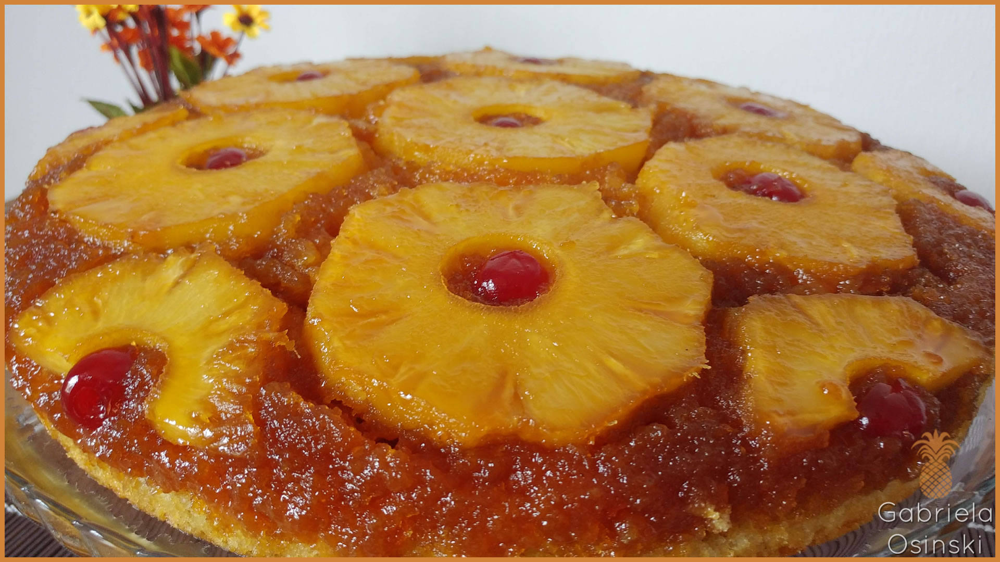

Doces · Tortas e bolos
Bolo de abacaxi

Ingredientes
- 1 colher (sopa) de manteiga
- 1/4 xícara de açúcar demerara
- 5 rodelas de abacaxi em conserva escorridas
- 5 cerejas ao marasquino escorridas e cortadas ao meio
- 1 xícara de farinha de trigo
- 3/4 xícara de açúcar
- 1 pitada de sal
- 1 ovo
- 2 colheres (sopa) de margarina cremosa
- 1/2 xícara da calda do abacaxi
- 1 colher (chá) de essência de baunilha
- 1 colher (chá) de fermento em pó
Modo de preparo
- Preaqueça o forno em temperatura média (180 °C). Derreta a manteiga numa forma refratária de vidro de 25 cm e espalhe nas paredes.
- Polvilhe o açúcar demerara. Forre com rodelas de abacaxi e complete com cerejas.
- No liquidificador, bata farinha, açúcar, sal, ovo, margarina, calda do abacaxi e baunilha por 3 minutos. Acrescente o fermento e bata mais um pouco.
- Despeje sobre o abacaxi e asse até o palito sair limpo perto do centro. Desenforme sobre prato, deixe esfriar e congele.
Observação: Congelamento: cubra com plástico, congele, retire do prato e embrulhe em filme. Descongelamento: temperatura ambiente por 2 horas.